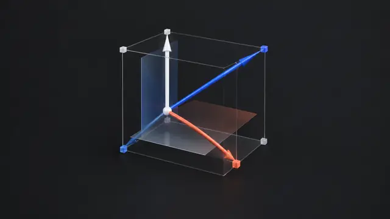

The four subspaces
Subspaces, the nullspace, pivot and free columns, the complete solution to Ax = b, independence and dimension, and the big picture of the four subspaces. 7 short slides, then worked examples and problems. Each slide has an everyday picture, a worked example and Python you can run right on the page.
Slides
- A subspace contains the zero vector and is closed under addition and scaling.
- Lines and planes through the origin are subspaces. Those that miss the origin are not.
- The column space C(A) from lesson 1 is a subspace.
Vector Spaces and Subspaces Explained Visually
A subspace is a set you cannot leave by adding and scaling: a line or plane through the origin. Examples, non-examples and live Python. Strang §3.1.
Inside this slide- N(A) = all solutions of Ax = 0. It always contains x = 0.
- N(A) is a subspace: if Ax = 0 and Ay = 0, then A(cx + dy) = 0.
- If A is invertible, N(A) contains only 0.
Null Space Explained Visually
The null space is every input x with Ax = 0: inputs that produce no output. A two-thruster boat, a worked example and an interactive plot in Python. Strang §3.2.
Inside this slide- Elimination does not change the nullspace: Ax = 0 and Rx = 0 have the same solutions.
- Pivot variables belong to columns with pivots. Free variables belong to the other columns.
- Each free variable gives one special solution.
Reduced Row Echelon Form, Pivot Columns and Special Solutions
Reduce A to R, spot the pivot and free columns, and build the special solutions that fill the null space. Worked 2×4 example with Python. Strang §3.2.
Inside this slide- If Ax_p = b, then every solution is x = x_p + x_n with x_n in N(A).
- Ax = b is solvable exactly when b is in the column space C(A).
- To find x_p, set all free variables to 0 and solve for the pivot variables.
The Complete Solution to Ax = b: Particular Plus Null Space
Every solution of Ax = b is one particular solution plus any null space vector. See the solution line in an interactive plot and find it in Python. Strang §3.3.

Inside this slide- Independent: the only combination giving 0 is the one with all coefficients 0.
- Span: all combinations of the vectors.
- Basis: independent vectors that span the space.
Linear Independence, Basis and Dimension Explained
Independent vectors, a basis and the dimension of a space, with a toolkit analogy, a 3D example and rank in Python. Strang §3.4.
Inside this slide- Inputs (ℝⁿ): the row space C(Aᵀ), dimension r, and the nullspace N(A), dimension n − r.
- Outputs (ℝᵐ): the column space C(A), dimension r, and the left nullspace N(Aᵀ), dimension m − r.
- The row space and the column space always have the same dimension, r.
The Four Fundamental Subspaces Explained Visually
Row space, null space, column space and left null space: where they live, their dimensions, and why the row space is perpendicular to the null space. Interactive plot. Strang §3.5.
 Inside this slide
Inside this slide- Subspaces are closed under adding and scaling.
- N(A) holds the solutions of Ax = 0, found from the special solutions.
- Every solution of Ax = b is x_p + x_n.
Lesson 4 Recap: The Four Subspaces
Chapter 3 on one page: subspaces, the null space, pivot and free columns, the complete solution to Ax = b, basis and dimension, and the four fundamental subspaces.
 Inside
Inside- 3 worked examples, step by step
- 5 problems with hidden solutions
- A Python sandbox to check your answers
Worked examples and problems
Worked examples and practice problems with hidden solutions: subspaces, null space, special solutions, the complete solution to Ax = b, independence and the four subspaces.